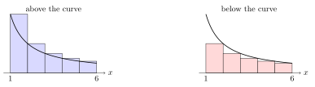

10.4 The Divergence and Integral Tests¶
Guiding question
The terms of \(1+\frac12+\frac13+\frac14+\cdots\) shrink to \(0\), and the sum of the first million of them is only about \(14.4\). Does the series settle down at some number like \(15\), or does it grow without bound? Nothing in the last section can say: there is no formula for \(S_n\), and the terms are positive, so convergence is equivalent to boundedness (Theorem 10.3.13) but we do not yet know whether the partial sums are bounded. This section gives two tools. The first is a one-line test that catches many divergent series. The second compares a series with an improper integral, which settles the harmonic series and every series \(\sum1/k^p\), and also tells us how far a partial sum can be from the full sum.
By the end of this section you should be able to:
-
apply the Divergence Test, and explain why it can prove divergence but never convergence;
-
prove that the harmonic series diverges, and say how slowly its partial sums grow;
-
apply the Integral Test: check that the function is positive, continuous and decreasing, evaluate the improper integral, and state the conclusion;
-
decide convergence of every \(p\)-series and use \(p\)-series as a yardstick;
-
bound the sum of a convergent series and the error of a partial sum, and find how many terms are enough;
-
prove the main theorems of this section.
The Divergence Test¶
Theorem 10.4.1: Divergence Test
If \(\sum a_k\) converges, then \(\lim_{k\to\infty}a_k=0\). Equivalently, if \(\lim_{k\to\infty}a_k\) does not exist or is not \(0\), then \(\sum a_k\) diverges.
Proof. Let \(S_n=a_M+\cdots+a_{M+n-1}\) be the partial sums and suppose \(S_n\to S\). Then \(S_{n+1}\to S\) as well (Theorem B.3), and the next term is the difference of two consecutive partial sums, \(a_{M+n}=S_{n+1}-S_n\). By the limit laws,
So the sequence \(a_{M+n}\), which is \(\{a_k\}\) with its first \(M\) terms dropped, tends to \(0\), and therefore \(a_k\to0\) (Theorem B.3). The second sentence is the contrapositive of the first. ◻ ∎
In words: if the terms do not tend to zero, the partial sums cannot settle down, because each new term moves the sum by a definite amount. Be careful about which way the theorem points. It lets us reject a series; it can never be used to accept one.
Example 10.4.2: Using the Divergence Test
Decide which of these series the Divergence Test shows to diverge, and which it cannot decide. (a) \(\displaystyle\sum_{k=1}^\infty\frac{2k^2+1}{k^2+3k}\); (b) \(\displaystyle\sum_{k=1}^\infty(-1)^k\frac{k+2}{k}\); (c) \(\displaystyle\sum_{k=1}^\infty k\sin\frac1k\); (d) \(\displaystyle\sum_{k=1}^\infty\frac1{k^2}\) and \(\displaystyle\sum_{k=1}^\infty\frac1k\).
Solution. In each case look at \(\lim a_k\).
(a) Dividing by \(k^2\), \(a_k=\dfrac{2+1/k^2}{1+3/k}\to2\ne0\). The series diverges.
(b) \(|a_k|=\dfrac{k+2}k\to1\), so the terms are close to \(+1\) for even \(k\) and close to \(-1\) for odd \(k\). Two subsequences have different limits, so \(\lim a_k\) does not exist (Theorem C.2), in particular it is not \(0\). The series diverges.
(c) By the limit of \(f(n)\) (Example 10.2.9), \(k\sin\frac1k\to1\ne0\). The series diverges.
(d) Here \(\frac1{k^2}\to0\) and \(\frac1k\to0\). The test says nothing: the terms tend to \(0\) but that does not decide convergence.
Example 10.4.3: Limits from the previous section feed the test
Apply the Divergence Test where it can be applied: (a) \(\displaystyle\sum_{k=1}^\infty\left(1+\frac2k\right)^k\); (b) \(\displaystyle\sum_{k=1}^\infty\frac{k!}{10^k}\); (c) \(\displaystyle\sum_{k=1}^\infty\frac{10^k}{k!}\).
Solution. (a) Take logarithms: \(\ln a_k=k\ln\left(1+\frac2k\right)=\dfrac{\ln(1+2/x)}{1/x}\) at \(x=k\). By l’Hôpital’s Rule, \(\dfrac{\frac{-2/x^2}{1+2/x}}{-1/x^2}=\dfrac2{1+2/x}\to2\), so \(\ln a_k\to2\), and since the exponential function is continuous (Theorem 10.2.6), \(a_k\to e^2\approx7.39\ne0\). The series diverges.
(b) By Theorem 10.2.13(c), \(\frac{10^k}{k!}\to0\) through positive values, so the reciprocal \(\frac{k!}{10^k}\to\infty\). The terms do not tend to \(0\) and the series diverges. (The terms first exceed \(1\) at \(k=25\): \(\frac{25!}{10^{25}}\approx1.55\).)
(c) Now \(\frac{10^k}{k!}\to0\) by the same theorem. The test is inconclusive. (This series does converge, as a later test will show; the Divergence Test cannot tell.)
Knowledge Check 10.4.1: The Divergence Test
For each series, say whether the Divergence Test shows divergence or is inconclusive, and why: (a) \(\displaystyle\sum_{k=1}^\infty\frac{3k+1}{2k+5}\); (b) \(\displaystyle\sum_{k=0}^\infty(-1)^k\); (c) \(\displaystyle\sum_{k=1}^\infty\frac1{k+10}\).
The harmonic series¶
Theorem 10.4.4: The harmonic series
The harmonic series \(\displaystyle\sum_{k=1}^\infty\frac1k\) diverges, although its terms tend to \(0\). More precisely, \(H_{2^m}\ge1+\dfrac m2\) for every integer \(m\ge0\), where \(H_n=1+\frac12+\cdots+\frac1n\).
Proof. We show by induction that \(H_{2^m}\ge1+\frac m2\). For \(m=0\): \(H_1=1\). For the inductive step, the terms added between \(H_{2^m}\) and \(H_{2^{m+1}}\) are \(\frac1{2^m+1},\dots,\frac1{2^{m+1}}\), which are \(2^m\) numbers, each at least the smallest of them, \(\frac1{2^{m+1}}\). So
and the inductive hypothesis gives \(H_{2^{m+1}}\ge1+\frac m2+\frac12=1+\frac{m+1}2\).
The partial sums \(H_n\) are increasing (the terms are positive) and the subsequence \(H_{2^m}\ge1+\frac m2\) is not bounded above, so \(\{H_n\}\) is not bounded above. By Theorem 10.3.13(b), \(H_n\to\infty\). ◻ ∎
Example 10.4.5: How slowly does the harmonic series diverge?
How many terms are needed for the partial sums \(H_n\) to exceed \(10\)?
Solution. The theorem gives \(H_{2^m}\ge1+\frac m2\), which reaches \(10\) when \(m=18\). So \(2^{18}=262144\) terms are enough. That is generous: in fact \(H_n\) first exceeds \(10\) at \(n=12367\) (\(H_{12366}\approx9.99996\) and \(H_{12367}\approx10.00004\)). Even so, adding a million terms gives only \(H_{10^6}\approx14.39\). A series whose partial sums need more than \(10^{4}\) terms to reach \(10\) is a vivid reminder that a table of values cannot decide convergence (compare Pause and think 10.1.2).
The converse of the Divergence Test is false
The harmonic series has \(a_k=\frac1k\to0\), yet it diverges. So “\(a_k\to0\)” is necessary for convergence but not sufficient. Whenever \(a_k\to0\), some other test must decide.
Pause and think 10.4.1: Two series with terms tending to zero
Both \(\sum\frac1k\) and \(\sum\frac1{k^2}\) have terms tending to \(0\). Compare how many terms lie between \(2^m\) and \(2^{m+1}\) and how big each of those terms is for each series. What does this suggest about the rate at which the terms must shrink for a series of positive terms to converge?
Answer and discussion
Between \(2^m\) and \(2^{m+1}\) there are \(2^m\) terms. For \(\sum\frac1k\) each of them is at least \(\frac1{2^{m+1}}\), so the block contributes at least \(\frac12\), and every block does, so the total is infinite. For \(\sum\frac1{k^2}\) each term in the block is at most \(\frac1{4^m}\), so the block contributes at most \(2^m\cdot\frac1{4^m}=\frac1{2^m}\), and these block sums form a convergent geometric series. The rate matters: for a series of positive terms to converge the terms must shrink faster than \(\frac1k\) (the \(p\)-series theorem says exactly that the borderline is \(p=1\)).
The Integral Test¶
An integral is a limit of sums, and a series is a sum, so it is natural to compare them. The picture below shows \(f(x)=\frac1x\) on \([1,6]\). On the left, rectangles of height \(f(k)\) over \([k,k+1]\) lie above the curve; on the right, rectangles of height \(f(k+1)\) lie below it.

The left rectangles have total area \(f(1)+\cdots+f(5)\), which is at least \(\int_1^6f\); the right ones have total area \(f(2)+\cdots+f(6)\), which is at most \(\int_1^6f\). Squeezing the integral between two sums of the series is exactly what the proof does. For a function that is decreasing, each rectangle comparison goes the same way, so we need that hypothesis.
A function \(f\) is decreasing on an interval if \(f(x)>f(y)\) whenever \(x<y\) in the interval.
Theorem 10.4.6: Integral Test
Let \(N\) be a positive integer. Let \(f\) be continuous, positive and decreasing on \([N,\infty)\), and let \(a_k=f(k)\) for \(k=N,N+1,\dots\) Then:
(a) \(\displaystyle\sum_{k=N}^\infty a_k\) and \(\displaystyle\int_N^\infty f(x)\,dx\) either both converge or both diverge.
(b) If they converge, with \(S=\sum_{k=N}^\infty a_k\) and \(I=\int_N^\infty f(x)\,dx\), then \(I<S<a_N+I\). In particular \(S\ne I\).
(c) For every \(n\ge N\) the partial sum \(s_n=\sum_{k=N}^na_k\) satisfies \(\displaystyle\int_N^{n+1}f(x)\,dx<s_n\), and for every \(n\ge N+1\) also \(s_n<a_N+\displaystyle\int_N^nf(x)\,dx\). (These hold whether or not the series converges.)
Proof. Write \(F(b)=\int_N^bf(x)\,dx\) and \(s_n=\sum_{k=N}^na_k\).
Step 1: one rectangle at a time. For every \(k\ge N\),
Indeed, \(f(k+1)\le f(x)\le f(k)\) for \(k\le x\le k+1\). The functions \(f(x)-f(k+1)\) and \(f(k)-f(x)\) are continuous, are \(\ge0\) on \([k,k+1]\), and are positive at the midpoint \(x=k+\frac12\) (because \(f\) is decreasing). A continuous nonnegative function that is positive at some point has a positive integral, so both inequalities are strict (the interval has length \(1\)).
Step 2: add up. Adding the inequalities of Step 1 for \(k=N,\dots,n\) gives
The right inequality is the first claim of (c); replacing \(n\) by \(n-1\) in the left one gives \(s_n<a_N+F(n)\) for \(n\ge N+1\), the second claim.
Step 3: part (a). Suppose \(\sum a_k\) converges to \(S\). The terms are positive, so \(s_n\le S\) for every \(n\) (Theorem 10.3.13(a)), and by \((*)\), \(F(n+1)<S\) for every integer \(n\ge N\). The function \(F\) is nondecreasing, so by Theorem C.4(b) it is bounded above, and by part (a) of that theorem the improper integral converges. Conversely, suppose \(\int_N^\infty f\) converges to \(I\). Theorem C.4(a) gives \(F(b)\le I\) for all \(b\), so by \((*)\), \(s_{n+1}<a_N+F(n+1)\le a_N+I\): the partial sums of the positive series are bounded above, so the series converges by Theorem 10.3.13. Each of the two statements implies the other, so if one diverges, so does the other.
Step 4: part (b). Now let both converge. For \(k\ge N\) put \(p_k=a_k-\int_k^{k+1}f\) and \(q_k=\int_k^{k+1}f-a_{k+1}\); both are positive by Step 1. Adding up,
As \(n\to\infty\), \(s_n\to S\) and \(F(n+1)\to I\) (Theorem B.6(b)), so the two sums on the left converge to \(S-I\) and \(a_N+I-S\) by the limit laws. Each is the value of a series of positive terms, hence at least its first term (Theorem 10.3.13(a)): \(S-I\ge p_N>0\) and \(a_N+I-S\ge q_N>0\). This is (b). ◻ ∎
If \(f\) is only nonincreasing, the same proof works with \(\le\) in Step 1, and (a) still holds; the inequalities in (b) and (c) then become non-strict. Note what the theorem does not say: the value of the integral is not the value of the series.
Procedure 10.4.7: Using the Integral Test
-
Write \(a_k=f(k)\) for a function \(f\) defined on \([N,\infty)\).
-
Check that \(f\) is continuous, positive and decreasing on \([N,\infty)\) (usually by showing \(f'(x)<0\) there). Choose \(N\) so that this holds.
-
Compute \(\int_N^\infty f(x)\,dx=\lim_{b\to\infty}\int_N^bf(x)\,dx\).
-
Conclude: the series converges if and only if the integral converges. If it converges, the sum lies between \(I\) and \(a_N+I\).
Example 10.4.8: Convergence with bounds on the sum
Show that \(\displaystyle\sum_{k=1}^\infty ke^{-k^2}\) converges and trap its sum between two numbers.
Solution. Let \(f(x)=xe^{-x^2}\). It is continuous and positive. Its derivative is \(f'(x)=(1-2x^2)e^{-x^2}\), which is negative for \(x\ge1\), so \(f\) is decreasing on \([1,\infty)\) and \(N=1\) works. The integral is
It converges, so the series converges, by the Integral Test. By part (b), \(\dfrac1{2e}<S<a_1+\dfrac1{2e}=\dfrac3{2e}\), that is, \(0.184<S<0.552\). (The sum is in fact about \(0.405\).)
Example 10.4.9: Logarithms in the denominator
Decide whether (a) \(\displaystyle\sum_{k=2}^\infty\frac1{k\ln k}\) and (b) \(\displaystyle\sum_{k=2}^\infty\frac1{k(\ln k)^2}\) converge.
Solution. Both functions are positive and continuous on \([2,\infty)\), and both are decreasing there because their denominators (\(x\ln x\) and \(x(\ln x)^2\)) are positive and increasing. Use \(N=2\).
(a) Since \(\frac d{dx}\ln(\ln x)=\frac1{x\ln x}\), \(\displaystyle\int_2^b\frac{dx}{x\ln x}=\ln(\ln b)-\ln(\ln2)\to\infty\) as \(b\to\infty\). The integral diverges, so the series diverges (extremely slowly).
(b) Since \(\frac d{dx}\left(-\frac1{\ln x}\right)=\frac1{x(\ln x)^2}\), \(\displaystyle\int_2^b\frac{dx}{x(\ln x)^2}=\frac1{\ln2}-\frac1{\ln b}\to\frac1{\ln2}\approx1.443\). The integral converges, so the series converges, with \(1.443<S<\frac1{2(\ln2)^2}+1.443\).
Example 10.4.10: A function that decreases only eventually
Show that \(\displaystyle\sum_{k=1}^\infty k^2e^{-k}\) converges.
Solution. Let \(f(x)=x^2e^{-x}\). Then \(f'(x)=x(2-x)e^{-x}\), which is positive on \((0,2)\) and negative for \(x>2\). So \(f\) is not decreasing on \([1,\infty)\): indeed \(a_1=e^{-1}\approx0.368<a_2=4e^{-2}\approx0.541\). But \(f\) is decreasing on \([2,\infty)\), so the Integral Test applies with \(N=2\):
So \(\sum_{k=2}^\infty k^2e^{-k}\) converges. Adding the single term \(a_1\) does not change convergence (Theorem 10.3.11(5)), so \(\sum_{k=1}^\infty k^2e^{-k}\) converges too. The moral: the test needs “decreasing” only from some point on, and removing finitely many terms is harmless.
Knowledge Check 10.4.2: The Integral Test
Use the Integral Test to decide: (a) \(\displaystyle\sum_{k=1}^\infty\frac1{3k+2}\); (b) \(\displaystyle\sum_{k=1}^\infty\frac{2k}{(k^2+1)^2}\). For each, state the function, check the three hypotheses, and give the value of the improper integral.
Pause and think 10.4.2: Why “decreasing”?
Let \(f(x)=\sin^2(\pi x)\). Find \(a_k=f(k)\) and decide whether \(\sum a_k\) converges. Then decide whether \(\int_1^\infty f(x)\,dx\) converges (use \(\sin^2u=\frac{1-\cos2u}2\)). Which hypothesis of the Integral Test fails, and where does the proof use it?
Answer and discussion
\(a_k=\sin^2(\pi k)=0\) for every integer \(k\), so \(\sum a_k=0+0+\cdots=0\) converges. But \(\int_1^b\sin^2(\pi x)\,dx=\frac{b-1}2-\frac{\sin(2\pi b)}{4\pi}\to\infty\) (each unit interval contributes \(\frac12\)), so the integral diverges. The function is continuous and nonnegative (it is \(0\) at the integers, so “positive” fails there too) but it is not decreasing: it oscillates. Step 1 of the proof needs \(f(k+1)\le f(x)\le f(k)\) on each interval; here the integral over \([k,k+1]\) is \(\frac12\) although \(f(k)=f(k+1)=0\).
\(p\)-series¶
Theorem 10.4.11: Convergence of the \(p\)-series
The \(p\)-series \(\displaystyle\sum_{k=1}^\infty\frac1{k^p}\) converges if \(p>1\) and diverges if \(p\le1\). If \(p>1\) its sum \(S\) satisfies \(\dfrac1{p-1}<S<\dfrac p{p-1}\).
Proof. Case \(p\le0\). Then \(\frac1{k^p}=k^{-p}\ge1\) for all \(k\), so the terms do not tend to \(0\) and the series diverges by the Divergence Test.
Case \(p>0\). The function \(f(x)=x^{-p}\) is continuous and positive on \([1,\infty)\), and \(f'(x)=-px^{-p-1}<0\), so it is decreasing. For \(b>1\),
If \(p=1\), \(\ln b\to\infty\). If \(0<p<1\), \(1-p>0\) and \(b^{1-p}\to\infty\), so the integral diverges. If \(p>1\), \(b^{1-p}\to0\) and the integral converges to \(\frac1{p-1}\). By the Integral Test (part (a)) the series diverges for \(0<p\le1\) and converges for \(p>1\). In the convergent case part (b) of the Integral Test with \(a_1=1\) gives \(\frac1{p-1}<S<1+\frac1{p-1}=\frac p{p-1}\). ◻ ∎
For \(p=1\) the theorem contains the harmonic series again, now as a one-line consequence of the Integral Test. The \(p\)-series and the geometric series are the two yardsticks of this chapter: later sections compare other series with them. For example, \(p=2\) gives \(1<\sum\frac1{k^2}<2\), in agreement with the bound found in Example 10.2.31.
Example 10.4.12: Recognising \(p\)-series
Decide whether each series converges. (a) \(\displaystyle\sum_{k=1}^\infty\frac1{k^{1.01}}\); (b) \(\displaystyle\sum_{k=1}^\infty\frac1{\sqrt[3]{k^2}}\); (c) \(\displaystyle\sum_{k=1}^\infty\frac4{k^3}\); (d) \(\displaystyle\sum_{k=3}^\infty\frac1{k\sqrt k}\).
Solution. (a) \(p=1.01>1\), so it converges. By the theorem its sum is between \(\frac1{0.01}=100\) and \(101\): a convergent series with a huge sum.
(b) \(\frac1{\sqrt[3]{k^2}}=k^{-2/3}\), so \(p=\frac23\le1\): it diverges.
(c) \(\sum\frac1{k^3}\) converges (\(p=3\)), so by property (1) of Theorem 10.3.11 the series \(\sum\frac4{k^3}\) converges, with \(4\cdot\frac12<S<4\cdot\frac32\).
(d) \(\frac1{k\sqrt k}=k^{-3/2}\), so \(p=\frac32>1\) and \(\sum_{k=1}^\infty k^{-3/2}\) converges. The series in (d) starts at \(k=3\); by property (5) removing the first two terms does not affect convergence, so it converges as well.
Knowledge Check 10.4.3: \(p\)-series and bounds
(a) For which \(p\) does \(\displaystyle\sum_{k=1}^\infty\frac5{k^{p}}\) converge? (b) Show that the sum of \(\displaystyle\sum_{k=1}^\infty\frac1{k^3}\) lies between \(\frac12\) and \(\frac32\). (c) Does \(\displaystyle\sum_{k=1}^\infty\frac1{\sqrt{k^3}}\) converge?
Estimating a series: remainders and bounds¶
When a series converges we often want a number. The sum \(S\) is the limit of the partial sums \(s_n\), and the remainder \(R_n=S-s_n=\sum_{k=n+1}^\infty a_k\) is the error of \(s_n\) (Theorem 10.3.11(5)). The Integral Test also controls \(R_n\).
Theorem 10.4.13: Estimating a series with positive terms
Let \(f\) be continuous, positive and decreasing on \([N,\infty)\), let \(a_k=f(k)\), and suppose \(S=\sum_{k=N}^\infty a_k\) converges. Let \(s_n=\sum_{k=N}^na_k\) and \(R_n=S-s_n\). Then for every \(n\ge N\),
and therefore the sum is trapped between
Moreover \(U_n-L_n=\displaystyle\int_n^{n+1}f(x)\,dx<a_n\), so the midpoint \(\frac12(L_n+U_n)\) differs from \(S\) by less than \(\frac12\displaystyle\int_n^{n+1}f(x)\,dx\).
Proof. The series \(\sum_{k=n+1}^\infty a_k\) converges (to \(R_n\), by Theorem 10.3.11(5)), and \(f\) is positive, continuous and decreasing on \([n+1,\infty)\), so the Integral Test with \(N\) replaced by \(n+1\) applies: the integral \(\int_{n+1}^\infty f\) converges, and part (b) gives
This is the lower bound. For the upper bound, Step 1 of the proof of the Integral Test gives \(a_{n+1}<\int_n^{n+1}f\), so \(R_n<\int_n^{n+1}f+\int_{n+1}^\infty f=\int_n^\infty f\). Adding \(s_n\) to each side gives the bounds \(L_n<S<U_n\). Finally \(U_n-L_n=\int_n^\infty f-\int_{n+1}^\infty f=\int_n^{n+1}f<a_n\) by Step 1, and the midpoint of an interval of length \(U_n-L_n\) that contains \(S\) is within half that length of \(S\). ◻ ∎
Example 10.4.14: How many terms are enough?
How many terms of \(\displaystyle\sum_{k=1}^\infty\frac1{k^3}\) guarantee an error less than \(0.001\)?
Solution. With \(f(x)=x^{-3}\), \(\displaystyle\int_n^\infty x^{-3}\,dx=\frac1{2n^2}\). The theorem gives \(\dfrac1{2(n+1)^2}<R_n<\dfrac1{2n^2}\). For a guarantee use the upper bound: \(\frac1{2n^2}<0.001\) when \(n^2>500\), that is \(n\ge23\) (since \(22^2=484<500<529=23^2\)). So \(23\) terms suffice. Can fewer do? The lower bound says \(R_{21}>\frac1{2\cdot22^2}\approx0.00103>0.001\), so \(21\) terms do not. For \(n=22\) the bounds \(0.000945<R_{22}<0.001033\) straddle \(0.001\) and cannot decide; the true remainder is \(R_{22}\approx0.000987\), so \(22\) terms happen to be enough.
Example 10.4.15: Estimating \(\sum1/k^2\) from ten terms
Use \(n=10\) to bracket \(\displaystyle\sum_{k=1}^\infty\frac1{k^2}\) and estimate it by the midpoint.
Solution. The partial sum is \(s_{10}=\sum_{k=1}^{10}\frac1{k^2}\approx1.549768\). With \(f(x)=x^{-2}\), \(\int_{11}^\infty f=\frac1{11}\) and \(\int_{10}^\infty f=\frac1{10}\), so
The midpoint is \(\approx1.645222\), and the error is less than \(\frac12(U_{10}-L_{10})=\frac12\cdot\frac1{110}=\frac1{220}\approx0.0045\). (The exact sum is \(\frac{\pi^2}6\approx1.644934\), so the actual error is about \(0.0003\).)
Pause and think 10.4.3: The integral is not the sum
The series \(\sum_{k=1}^\infty\frac1{2^k}\) has sum \(1\). Compute \(\int_1^\infty2^{-x}\,dx\), check the inequality \(I<S<a_1+I\), and explain why the integral can never equal the sum of the series.
Answer and discussion
\(\int_1^\infty2^{-x}\,dx=\left[-\frac{2^{-x}}{\ln2}\right]_1^\infty=\frac1{2\ln2}\approx0.721\). Then \(0.721<S=1<a_1+I=\frac12+0.721=1.221\), so the inequality holds. The integral is always strictly less than the sum because each rectangle of height \(a_k\) over \([k,k+1]\) sticks out strictly above the curve (Step 1 of the proof): the sum is the total area of rectangles above the curve, the integral is the area under it, and the difference \(\sum p_k\) is a positive number. Also the sum is strictly less than \(a_N+I\) because the rectangles on the right lie strictly below it.
Example bank¶
What’s in this bank. Fourteen further worked examples, grouped by problem type and ordered from easiest to hardest within each group.
-
Hypotheses and the starting index (Examples 10.4.22–10.4.23).
-
Applications: harmonic bounds and slow convergence (Examples 10.4.26–10.4.27).
Group 1: The Divergence Test¶
Example 10.4.16: A rational term
Does \(\displaystyle\sum_{k=1}^\infty\frac{5k^2-2}{3k^2+k}\) converge?
Solution. Divide numerator and denominator by \(k^2\): \(a_k=\dfrac{5-2/k^2}{3+1/k}\to\dfrac53\ne0\). By the Divergence Test the series diverges. Check: \(a_{1000}=\dfrac{4999998}{3001000}\approx1.666\), already close to \(\frac53\), far from \(0\).
Example 10.4.17: A term that tends to \(e^{-1}\)
Does \(\displaystyle\sum_{k=1}^\infty\left(\frac k{k+1}\right)^k\) converge?
Solution. Take logarithms: \(\ln a_k=k\ln\dfrac k{k+1}=-k\ln\left(1+\dfrac1k\right)=-\dfrac{\ln(1+u)}{u}\) with \(u=\frac1k\to0\). Since \(\frac{\ln(1+u)}u\to1\) (l’Hôpital, or the derivative of \(\ln\) at \(1\)), \(\ln a_k\to-1\), so \(a_k\to e^{-1}\approx0.368\ne0\) by continuity of the exponential. The series diverges. Check: \(a_{100}=\left(\frac{100}{101}\right)^{100}\approx0.3697\).
Group 2: The Integral Test¶
Example 10.4.18: A linear denominator
Does \(\displaystyle\sum_{k=1}^\infty\frac1{2k+3}\) converge?
Solution. Let \(f(x)=\dfrac1{2x+3}\): positive, continuous, and decreasing on \([1,\infty)\) because \(f'(x)=-\dfrac2{(2x+3)^2}<0\). Then \(\displaystyle\int_1^b\frac{dx}{2x+3}=\frac12\ln(2b+3)-\frac12\ln5\to\infty\). The integral diverges, so the series diverges. (It behaves like half of the harmonic series.)
Example 10.4.19: An arctangent integral, with bounds
Show that \(\displaystyle\sum_{k=1}^\infty\frac1{k^2+4}\) converges and trap its sum.
Solution. \(f(x)=\dfrac1{x^2+4}\) is positive and continuous, and \(f'(x)=-\dfrac{2x}{(x^2+4)^2}<0\) for \(x>0\), so it is decreasing on \([1,\infty)\). Then
so the series converges. By part (b), \(0.5536<S<a_1+0.5536=\frac15+0.5536=0.7536\).
Group 3: \(p\)-series and combinations¶
Example 10.4.20: Reading off \(p\)
Which of these converge? (a) \(\displaystyle\sum_{k=1}^\infty\frac3{k^{1.5}}\); (b) \(\displaystyle\sum_{k=1}^\infty k^{-0.8}\); (c) \(\displaystyle\sum_{k=1}^\infty\frac1{k\sqrt[4]{k}}\); (d) \(\displaystyle\sum_{k=1}^\infty\frac{1}{\sqrt{k}}\).
Solution. Write each as a multiple of \(k^{-p}\) and compare \(p\) with \(1\). (a) \(p=1.5>1\): converges (a constant multiple of a convergent series converges). (b) \(p=0.8\le1\): diverges. (c) \(k\sqrt[4]k=k^{5/4}\), so \(p=1.25>1\): converges. (d) \(p=\frac12\le1\): diverges.
Example 10.4.21: Combining \(p\)-series with other series
Decide (a) \(\displaystyle\sum_{k=1}^\infty\left[\frac4{k^3}+\left(\frac23\right)^k\right]\) and (b) \(\displaystyle\sum_{k=1}^\infty\left[\frac7{\sqrt k}-\frac1{k^2}\right]\).
Solution. (a) \(\sum\frac4{k^3}\) converges (\(p=3\)) and \(\sum\left(\frac23\right)^k\) converges (geometric, \(|r|<1\), value \(2\)), so the sum of the two converges by property (3) of Theorem 10.3.11. (b) \(\sum\frac7{\sqrt k}\) diverges (property (2) applied to the divergent \(p\)-series with \(p=\frac12\)), while \(\sum\frac1{k^2}\) converges (\(p=2\)); by property (4) the difference diverges. Note that (b) is not an \(\infty-\infty\) problem: exactly one of the two pieces diverges.
Group 4: Hypotheses and the starting index¶
Example 10.4.22: Decreasing from \(x=2\) on
Show that \(\displaystyle\sum_{k=1}^\infty\frac{\ln k}{k^2}\) converges.
Solution. Let \(f(x)=\dfrac{\ln x}{x^2}\). Then \(f'(x)=\dfrac{1-2\ln x}{x^3}\), which is negative when \(\ln x>\frac12\), that is \(x>e^{1/2}\approx1.65\). So \(f\) is positive on \((1,\infty)\) and decreasing on \([2,\infty)\), and we use \(N=2\). Integrating by parts,
So \(\sum_{k=2}^\infty\frac{\ln k}{k^2}\) converges. The term at \(k=1\) is \(\ln1=0\) and does not matter in any case, so the original series converges.
Example 10.4.23: A longer wait for monotonicity
Show that \(\displaystyle\sum_{k=1}^\infty ke^{-k/3}\) converges.
Solution. Let \(f(x)=xe^{-x/3}\). Then \(f'(x)=\left(1-\dfrac x3\right)e^{-x/3}\), positive for \(x<3\) and negative for \(x>3\). So \(f\) increases up to \(x=3\) and decreases afterwards: the terms are \(a_1\approx0.72\), \(a_2\approx1.03\), \(a_3\approx1.10\), \(a_4\approx1.05,\dots\). We use \(N=3\). Then
so \(\sum_{k=3}^\infty ke^{-k/3}\) converges, hence the series from \(k=1\) converges (property (5)). The first term that is larger than its successor is \(a_3\): this is why \(N=1\) or \(N=2\) would be wrong.
Group 5: Estimates and remainders¶
Example 10.4.24: Bracketing \(\sum1/k^4\)
Bracket \(\displaystyle\sum_{k=1}^\infty\frac1{k^4}\) using \(n=5\).
Solution. \(s_5=1+\frac1{16}+\frac1{81}+\frac1{256}+\frac1{625}\approx1.080352\). With \(f(x)=x^{-4}\), \(\int_n^\infty f=\frac1{3n^3}\), so \(\int_6^\infty f=\frac1{648}\approx0.001543\) and \(\int_5^\infty f=\frac1{375}\approx0.002667\). Hence
The exact sum is \(\frac{\pi^4}{90}\approx1.082323\), inside the bracket, as the theorem promises, and the bracket is only \(0.0011\) wide after five terms.
Example 10.4.25: Terms needed for six decimal places
How many terms of \(\displaystyle\sum_{k=1}^\infty\frac1{k^3}\) guarantee an error less than \(10^{-6}\)?
Solution. Use the upper bound \(R_n<\int_n^\infty x^{-3}\,dx=\frac1{2n^2}\). We need \(\frac1{2n^2}\le10^{-6}\), that is \(n^2\ge500000\), so \(n\ge\sqrt{500000}\approx707.1\) and \(n=708\) is the smallest integer that the bound guarantees. Check: \(\frac1{2\cdot708^2}\approx9.97\times10^{-7}<10^{-6}\), while \(\frac1{2\cdot707^2}\approx1.0004\times10^{-6}>10^{-6}\). Compare with the geometric series: there six decimal places needed a few dozen terms; here \(700\) terms are needed because the terms shrink only like \(\frac1{k^3}\).
Group 6: Applications: harmonic bounds and slow convergence¶
Example 10.4.26: Bounding the harmonic numbers
Show that \(\ln(n+1)<H_n<1+\ln n\) for \(n\ge2\), and use this to say roughly how many terms make \(H_n\) exceed \(20\).
Solution. Apply part (c) of the Integral Test to \(f(x)=\frac1x\) with \(N=1\): \(\int_1^{n+1}\frac{dx}x<H_n<1+\int_1^n\frac{dx}x\), that is \(\ln(n+1)<H_n<1+\ln n\). For instance \(n=1000\): \(6.909<H_{1000}\approx7.485<7.908\). For \(H_n>20\) it is sufficient that \(\ln(n+1)\ge20\), i.e. \(n\ge e^{20}-1\approx4.9\times10^8\), and it is necessary that \(1+\ln n>20\), i.e. \(n>e^{19}\approx1.8\times10^8\). So about \(10^8\) to \(10^9\) terms are needed (the true value is near \(2.7\times10^8\)): a computer could do it, but no table by hand would.
Example 10.4.27: A convergent series that no table can sum
Show that \(\displaystyle\sum_{k=1}^\infty\frac1{k^{1.1}}\) converges and explain why partial sums approximate it badly.
Solution. It is a \(p\)-series with \(p=1.1>1\), so it converges, and by Theorem 10.4.11 its sum lies between \(\frac1{0.1}=10\) and \(11\) (it is about \(10.58\)). The remainder satisfies \(R_n<\int_n^\infty x^{-1.1}\,dx=10\,n^{-0.1}\). After a million terms the bound is \(10\cdot(10^6)^{-0.1}=10\cdot10^{-0.6}\approx2.5\), so the first million terms may still be about \(2.5\) short of the sum (in fact \(s_{10^6}\approx8.07\)). To guarantee \(R_n<0.01\) we would need \(10\,n^{-0.1}<0.01\), that is \(n^{0.1}>1000\) and \(n>10^{30}\). Convergence is a statement about the infinite tail, and for \(p\) close to \(1\) the tail is enormous.
Group 7: Proofs¶
Example 10.4.28: Using the harmonic series in a proof
Prove that \(\displaystyle\sum_{k=1}^\infty\frac1{2k}\) diverges.
Plan. Suppose it converged; use property (1) to make the harmonic series converge, which is false.
Proof. Suppose \(\sum_{k=1}^\infty\frac1{2k}\) converged, to \(A\). By property (1) of Theorem 10.3.11 with \(c=2\), the series \(\sum_{k=1}^\infty2\cdot\frac1{2k}=\sum_{k=1}^\infty\frac1k\) would converge (to \(2A\)). But the harmonic series diverges (Theorem 10.4.4). This contradiction shows that \(\sum\frac1{2k}\) diverges. ◻ ∎
A common mistake is to say “the terms tend to \(0\), so it converges”, which is the reverse of the Divergence Test.
Example 10.4.29: Bounds for every \(p\)-series
Prove that for \(p>1\), \(\ \dfrac1{p-1}<\displaystyle\sum_{k=1}^\infty\dfrac1{k^p}<\dfrac p{p-1}\), and use it to bound \(\sum\frac1{k^{3/2}}\).
Plan. Apply part (b) of the Integral Test to \(f(x)=x^{-p}\) with \(N=1\).
Proof. For \(p>1\) the function \(f(x)=x^{-p}\) is continuous, positive and decreasing on \([1,\infty)\) (because \(f'(x)=-px^{-p-1}<0\)), and \(a_k=f(k)=k^{-p}\). The improper integral is \(\int_1^\infty x^{-p}\,dx=\lim_{b\to\infty}\frac{b^{1-p}-1}{1-p}=\frac1{p-1}\), since \(b^{1-p}\to0\). By the Integral Test (b), \(I<S<a_1+I\) with \(I=\frac1{p-1}\) and \(a_1=1\), so \(\frac1{p-1}<S<1+\frac1{p-1}=\frac p{p-1}\). ◻ ∎
For \(p=\frac32\) this gives \(2<\sum\frac1{k^{3/2}}<3\) (the true value is about \(2.612\)). A common mistake is to forget that part (b) has strict inequalities and the upper bound contains the first term \(a_1\).
Answers and discussion¶
Knowledge Check 10.4.1. (a) \(a_k=\frac{3k+1}{2k+5}\to\frac32\ne0\): the series diverges. (b) \(a_k=(-1)^k\) has no limit (it alternates between \(1\) and \(-1\)), so it does not tend to \(0\): the series diverges. (c) \(\frac1{k+10}\to0\): the test is inconclusive (and in fact the series diverges, since it is the harmonic series with the first ten terms missing, by property (5) of series; but the Divergence Test cannot show that).
Knowledge Check 10.4.2. (a) \(f(x)=\frac1{3x+2}\) is positive, continuous and decreasing on \([1,\infty)\); \(\int_1^b\frac{dx}{3x+2}=\frac13\ln(3b+2)-\frac13\ln5\to\infty\), so the series diverges. (b) \(f(x)=\frac{2x}{(x^2+1)^2}\) is positive and continuous, and \(f'(x)=\frac{2(1-3x^2)}{(x^2+1)^3}<0\) for \(x\ge1\); \(\int_1^\infty f=\lim_{b\to\infty}\left[-\frac1{x^2+1}\right]_1^b=\frac12\), so the series converges, and its sum is between \(\frac12\) and \(\frac12+a_1=\frac12+\frac12=1\).
Knowledge Check 10.4.3. (a) By property (1) the series converges exactly when \(\sum k^{-p}\) does, that is, when \(p>1\). (b) Theorem 10.4.11 with \(p=3\) gives \(\frac1{3-1}<S<\frac3{3-1}\), that is \(\frac12<S<\frac32\). (c) \(\frac1{\sqrt{k^3}}=k^{-3/2}\), so \(p=\frac32>1\) and it converges.